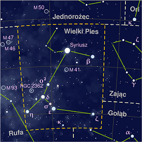
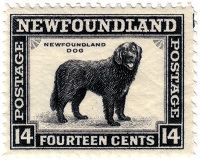

CIEKAWOSTKI
Nauka zajmująca się tymi zwięrzętami to kynologia.

Pies jest jednym ze znaków chińskiego zodiaku.
| Znak |
Rok |
| 狗 Pies |
M 1910; W 1922; D 1934; O 1946; Z 1958; M 1970; W 1982; D 1994; O 2006; Z 2018 |
Żywioły: M oznacza metal, W – wodę, D – drewno, O – ogień, Z – ziemię.
W mitologii greckiej znajdował się olbrzymi trzygłowy pies strzegący wejścia do świata zmarłych (cerber).

Istnieją dwa gwiazdozbiory: Mały Pies i Wielki Pies.

Mały-71 co do wielkości gwiazdozbiór,
Duży-43 miejsce pod względem rozmiaru.
Szacuje się, że pies został udomowiony ok. 17-12tyś. lat temu. Był on wtedy wykorzystywany do myślistwa.

Popularność danej rasy często zależna jest od aktualnych trendów. Przykładowo w latach 60. XX wieku dużą popularność zdobyły psy razy dalmatyńczyk, w związku z premierą filmu animowanego 101 dalmatyńczyków.

Pies w filatelistyce pojawił się obok pierwszego znaczka pocztowego w Anglii w 1840 roku. Od tego czasu często gościł na znaczku jako serie lub pojedyncze egzemplarze, przedstawiające poszczególne rasy lub jako motyw w sztuce.

 PSY
PSY